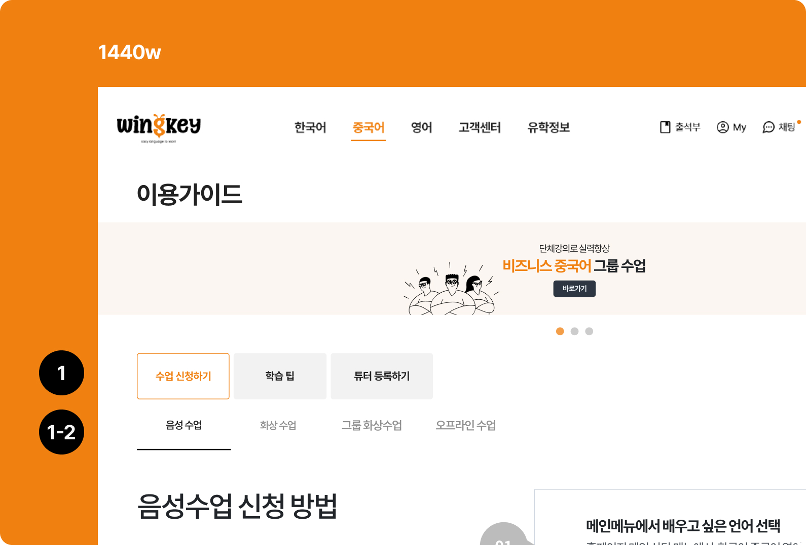
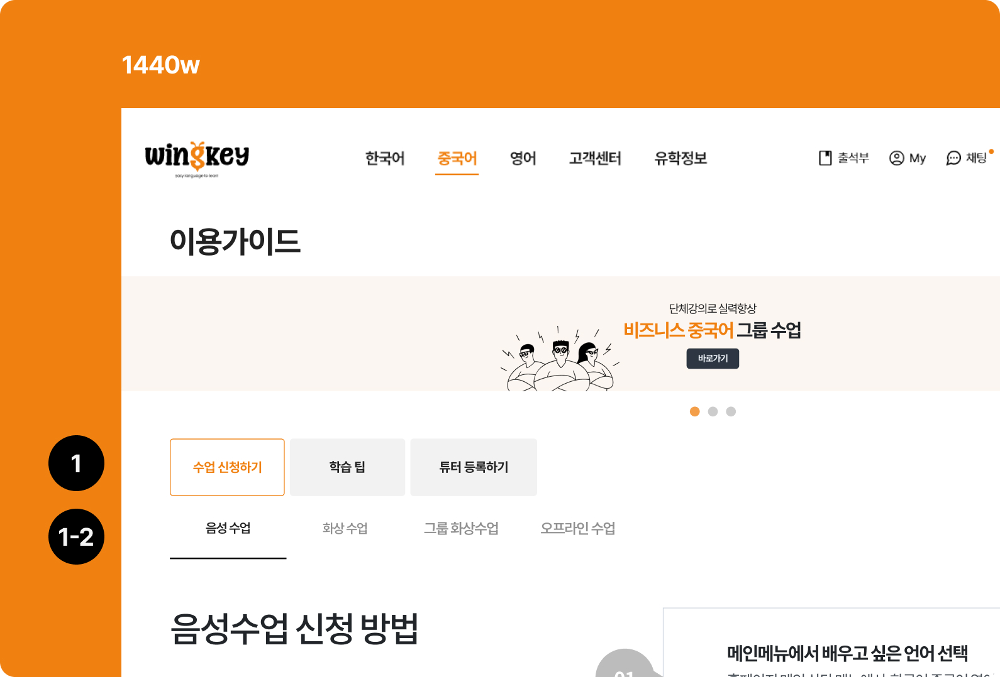

모바일 기존
모바일 기존
 모바일 개선
모바일 개선
 배너 프레임 변경
배너 프레임 변경
 

 영문번역시 : 영문 번역 시 레리아웃 체크
영문번역시 : 영문 번역 시 레리아웃 체크
 주요 액션버튼과 함께 쓰일경우: 액션버튼보다 더 강조되지 버튼 주목성 체크
주요 액션버튼과 함께 쓰일경우: 액션버튼보다 더 강조되지 버튼 주목성 체크
 스크롤시: 페이지 벗어나기 이동에 번거로움이 없는지 체크
스크롤시: 페이지 벗어나기 이동에 번거로움이 없는지 체크


수강신청 페이지 개선
1 진입이 어려운 수강신청 페이지
윙키는 각 언어별(중국어,영어) 수강신청 페이지로 진입해 원하는 튜터의 수업을 결제해야 해야하나
많은 사용자들이 수강신청 페이지 진입 자체를 어려워했습니다.


최우선적으로 pc/모바일 포함 페이지/ 버튼레이블 불일치 오류로 인한 수강신청 탐색 방해요소를 제거했습니다.
 기존화면 - 진입후
기존화면 - 진입후

 조사결과 링글은 직장인 타겟으로 튜터의 전공분야 등 가장 강력한 필터를 제공했고,
조사결과 링글은 직장인 타겟으로 튜터의 전공분야 등 가장 강력한 필터를 제공했고,